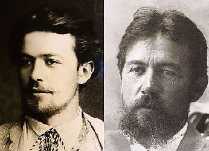

Борис Акунин
Мой календарь
Антона Павловича Чехова, чей день рождения отмечается сегодня, чтут все. Как прозаика, как драматурга, как икону интеллигентности. В нем прямо всё прекрасно: и лицо, и душа, и мысли, и пенсне.
Я не исключение, я тоже перед Чеховым преклоняюсь. Но больше всего не за тексты и не за личную достойность, а за поразительную эволюцию, которую этот человек проделал за свою очень недлинную жизнь.
Легко быть интеллигентом, когда ты родился и вырос среди тонких, деликатных и сострадательных людей. Но Чехов - сын тупого и пошлого лавочника, воспитанный затрещинами, в детстве не знавший ничего кроме грубости и унижений. «Воспитанный на чинопочитании, целовании поповских рук, поклонении чужим мыслям, благодаривший за каждый кусок хлеба, много раз сеченный, ходивший по урокам без калош, дравшийся, мучивший животных, любивший обедать у богатых родственников, лицемеривший и богу и людям без всякой надобности, только из сознания своего ничтожества», - так безжалостно опишет он сам себя в зрелом возрасте.
В юности Антоша был совершенный продукт своей среды, сыпавший антисемитскими шуточками и любивший порассуждать, как надо «тараканить» женщин. Личный путь, который он проделал, огромен и совершенно прекрасен. Писатель выдавил из себя «по капле» всю пакость и к концу жизни стал Чеховым, которого мы помним и любим.
Сам он называл проделанную работу «дрессировкой».
Сегодня отличный день, чтобы начать дрессировать себя по-чеховски. Антон Павлович и программу для нас составил: «Воспитанные люди должны удовлетворять следующим условиям. Они уважают человеческую личность, а потому всегда снисходительны, мягки, вежливы, уступчивы… Они сострадательны не только к одним только нищим и кошкам…Они чистосердечны и боятся лжи, как огня. Не лгут даже в пустяках. Из уважения к чужим ушам, они чаще молчат. Они не унижают себя с той целью, чтобы вызвать в других сочувствие. Они не суетны. Если они имеют при себе талант, то уважают его. Они жертвуют для него покоем, женщинами, вином, суетой… Они воспитывают в себе эстетику».
Стоит попробовать.